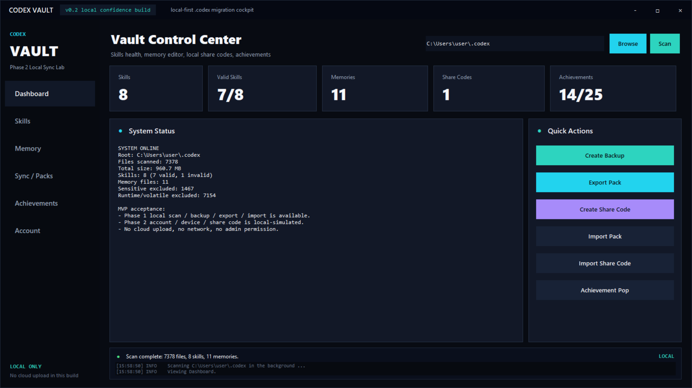

01
Own the folder.
Scan your local `.codex` directory without a cloud account. See skills, memory files, prompts, rules, backups, and excluded sensitive files.
Codex Vault is a local-first desktop companion for the skills, memory notes, prompts, and migration packs that make your Codex setup feel like yours.

Codex gets better as your local context grows. Codex Vault gives those assets a home: visible, backed up, portable, and still under your control.
Scan your local `.codex` directory without a cloud account. See skills, memory files, prompts, rules, backups, and excluded sensitive files.
Every import can be previewed before it writes. Added, replaced, and skipped files are called out before a backup point is created.
Achievements turn healthy workspace habits into tiny milestones, with progress bars, unlock history, and desktop notifications.
The beta focuses on the parts that matter for migration: identify what is safe, exclude what is risky, create a pack, and recover quickly if you change your mind.
Read your local `.codex` structure and classify assets by type.
Keep auth files, tokens, sessions, caches, and runtime data out of exports.
Inspect what an import will add or replace before it touches the filesystem.
Restore from a local backup point when a migration needs to be undone.
Codex Vault v0.2 keeps the footprint small: Windows, Python standard library, local data, and clear boundaries. Real hosted sync can arrive later without rushing the trust model.
Count skills, validate `SKILL.md`, and preview the instruction file that Codex will actually read.
Inspect important memory markdown without editing it by accident during beta testing.
Generate local codes for migration experiments before public object storage exists.
Click cards to reveal requirements, progress, rarity, and recent unlock history.
Clone the beta, run the desktop app, and see what your `.codex` folder has quietly become.